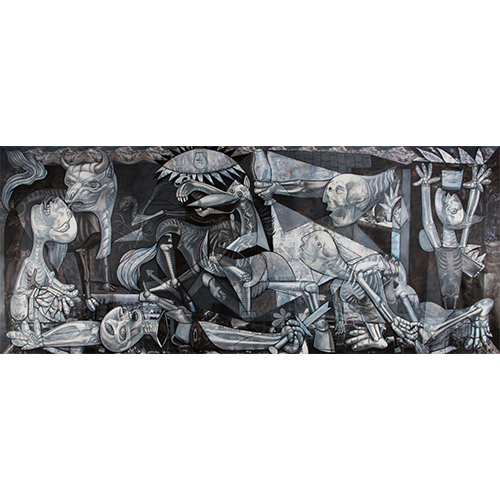

Exhibitions
Guernica, Allouche Gallery, New York, New York, US, September 23–October 19, 2016.
Reimagining “Guernica” / La réinvention du “Guernica”, Museo de la Paz de Gernika, Gernika-Lumo, Bizkaia, Spain, April 4–December 10, 2017.
Literature
Ron English, Death and the Eternal Forever (Korero Press, 2014), p. 146. ISBN 978-0957664920.
Ron English, Original Grin: The Art of Ron English (Paris: Cernunnos, 2019), p. 215. ISBN 978-2374950938.
Notes
Also known as Ghost Guernia.
Reproduced in Allouche Gallery’s exhibition catalogue PDF for Ron English: Guernica, accessed April 5, 2026, https://www.allouchegallery.com/wp-content/uploads/2023/09/Ron-English-Guernica-Catalogue.pdf.
The work is documented in the Museo de la Paz de Gernika’s digital exhibition catalogue / flip-book, accessed April 5, 2026.
This work references Pablo Picasso’s Guernica.